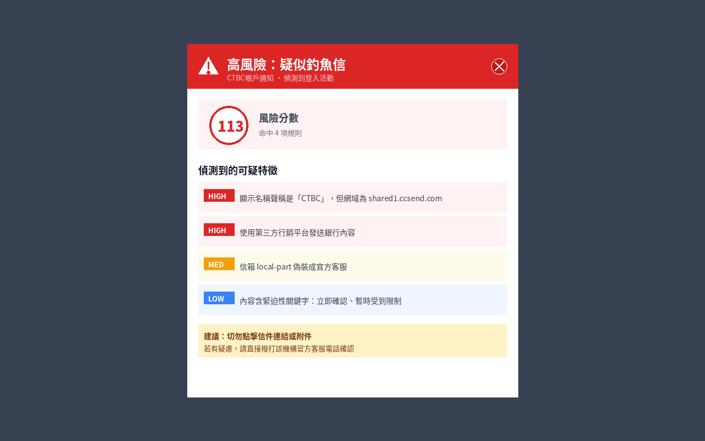
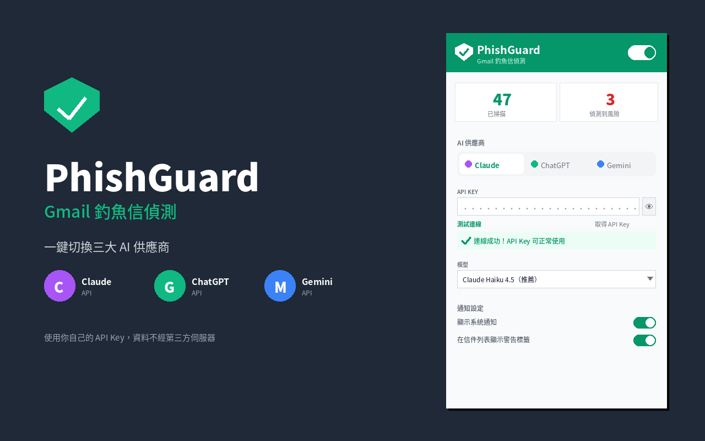

假冒中國信託、國泰、玉山的詐騙郵件層出不窮，
即使是資深使用者，也可能在疲憊時誤點釣魚連結。
InboxGuardian 幫你多一道防線，不靠眼力靠演算法。
根據真實使用者反饋打造，解決過往誤判、速度、體驗三大痛點
規則模式同時掃描 10 封信、AI 模式同時 3 封，不再一封封排隊等待。
右下角浮動卡片顯示掃描進度，AI 模式加入紫色脈動效果，讓你知道系統正在工作。
券商申購、信用卡廣告委託第三方發信不再誤判。透過 AI 分析信件意圖區分。
結合傳統規則引擎與現代 AI，給你最可靠的釣魚信防護
無需手動操作，打開 Gmail 自動掃描所有未讀信件，可疑信件立即標記。
規則引擎偵測可疑特徵 → 正向特徵辨識合法行銷信 → AI 智能判讀邊緣案例，大幅降低誤判。
網域偽裝、行銷平台濫用、緊迫性話術、連結不符、typosquatting 等多重防線。
偵測到釣魚信立即透過 Chrome 系統通知提醒，不會錯過任何威脅。
內建 30+ 台灣銀行與機構官方網域白名單：中國信託、國泰、玉山、台新、蝦皮、PChome…
規則引擎完全離線。AI 模式資料直接送到你選擇的 AI 廠商，不經第三方伺服器。
使用你自己的 API Key，自由選擇 Claude、ChatGPT 或 Gemini，資料不經第三方。
Anthropic
Anthropic 最新模型，邏輯推理能力強，特別擅長語義分析。
OpenAI
全球最廣泛使用的 AI，擁有豐富的訓練資料與生態系統。
Google 多模態 AI，免費額度充足，適合一般使用者入門。
市面上的 Gmail 釣魚信外掛不少，但沒有一款專為台灣使用者設計。
我們來看看差異在哪裡。
| 功能特性 | Gmail Guardian | PIXM Protection | 趨勢科技 Email Defender |
InboxGuardian
|
|---|---|---|---|---|
| 台灣銀行/機構白名單 | ✗ | ✗ | 部分 | ✓ 30+ 家 |
| 繁體中文介面 | ✗ | ✗ | ✓ | ✓ 原生 |
| AI 供應商選擇 | 固定單一 | 固定單一 | 固定單一 | ✓ 3 家可選 |
| 誤判防護機制 | ✗ | ✗ | 部分 | ✓ 三層 |
| 並發掃描 | ✗ | ✗ | ✗ | ✓ 10x 速度 |
| 資料流向 | 送到自家伺服器 | 送到自家伺服器 | 送到趨勢雲 | ✓ 不經第三方 |
| 價格 | 免費 + 付費進階 | 企業版付費 | 需趨勢科技訂閱 | ✓ 完全免費 |
| 開源程式碼 | ✗ | ✗ | ✗ | ✓ MIT |
| 即時進度顯示 | ✗ | ✗ | ✗ | ✓ 浮動指示器 |
| Chrome Web Store | ✓ | ✓ | ✓ | 審核中 |
全球競品都不認識中國信託、國泰、玉山。我們內建 30+ 台灣機構白名單，還持續擴充。
我們沒有自家伺服器。資料直接從你的瀏覽器送到你選的 AI 廠商，沒有中間人。
全部程式碼公開在 GitHub。你可以檢視每一行、提交 PR、fork 做你自己的版本。
真實案例示範：2026/04/23 截獲的偽造中國信託釣魚信
紅色 = 釣魚信，橘色 = 可疑，一眼分辨

完整列出所有可疑特徵與風險分數

一鍵切換偵測模式與 AI 供應商，配置 API Key 測試連線
跟著步驟操作，三分鐘內完成安裝
檔案名稱：inboxguardian-extension-v1.1.0.zip
點擊上方按鈕下載 zip，解壓縮到固定位置（例如桌面或文件夾）。
⚠️ 別刪除這個資料夾，否則擴充功能會失效。建議放在一個不會亂動的地方。
在 Chrome 網址列輸入以下指令並按 Enter：
chrome://extensions
頁面右上角切換「開發人員模式」開關。此為載入未上架擴充功能的標準做法，安全無虞。
點擊「載入未封裝項目」按鈕，選擇步驟 1 解壓縮的資料夾（裡面要有 manifest.json）。
訪問 mail.google.com，InboxGuardian 會自動啟動並開始掃描未讀信件。
想使用 AI 增強模式？點擊瀏覽器右上角的 InboxGuardian 圖示，設定 API Key 即可。
💬 遇到問題？ 到 GitHub Issues 留言，通常 24 小時內會回覆。
有任何疑問？這裡可能有答案
AI 只會在「規則引擎判定可疑」時才被呼叫，非常省錢。以一般使用者一天收到 50 封信、其中 1-2 封可疑為例：
src/lib/rule-engine.js 新增白名單。圖形化自訂 UI 介面規劃於 v1.2 推出。
v1.1 大幅強化了誤判防護。InboxGuardian 採用「負面特徵加分 + 正向特徵減分」的平衡設計：
舉例：券商委託 SendGrid 發的申購廣告、國泰委託 EDM 平台發的信用卡優惠等常見誤判情境，v1.1 已能正確辨識為合法行銷信。如遇誤判請到 GitHub Issues 回報。
幾乎感受不到。 v1.1 採用並發架構：
掃描過程中你可以正常讀信、切資料夾，右下角會有浮動指示器顯示即時進度。完成後會自動淡化不打擾你。
chrome://extensions 點擊 InboxGuardian 的「重新載入」按鈕即可。
InboxGuardian 沒有伺服器、沒有分析追蹤、沒有資料收集